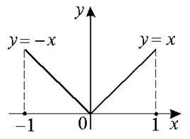

ТУ П 16 №1
Функция непрерывна, имеет на концах отрезка равные значения (проверьте!). Какова причина нарушения заключения теоремы Ролля?
РЕШЕНИЕ:

Для функции по определению не существует , так как ,
.
 ...
...